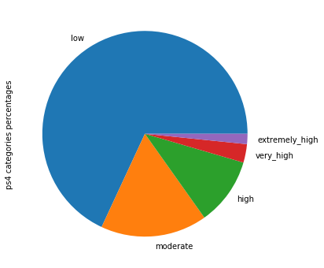
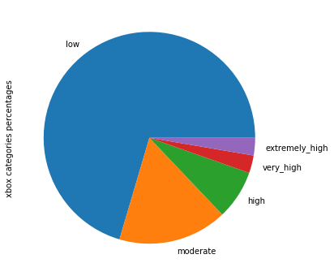
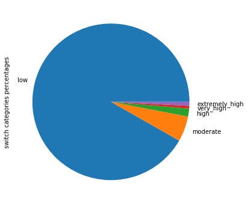
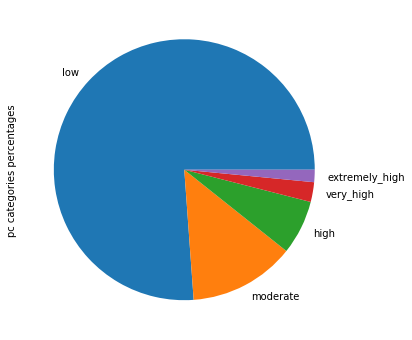
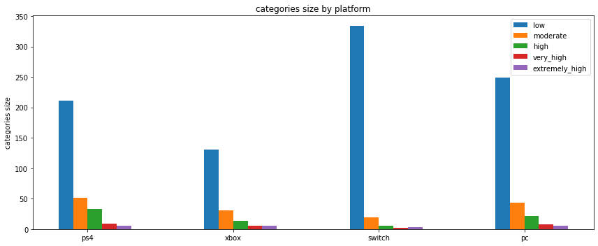
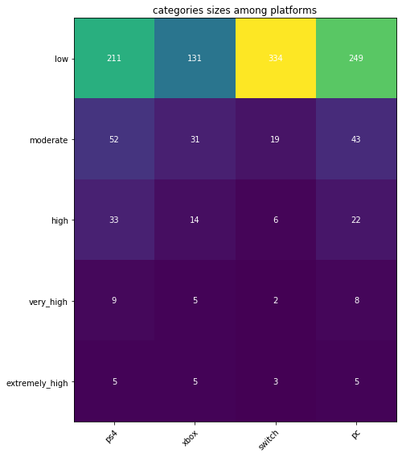
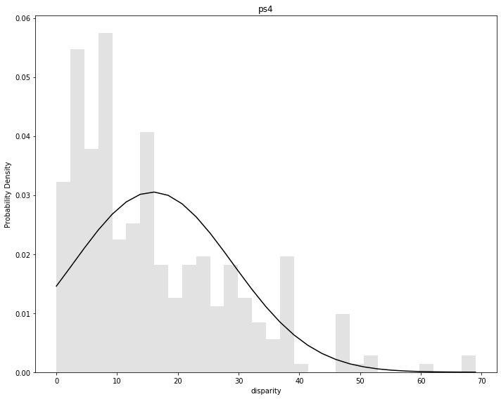
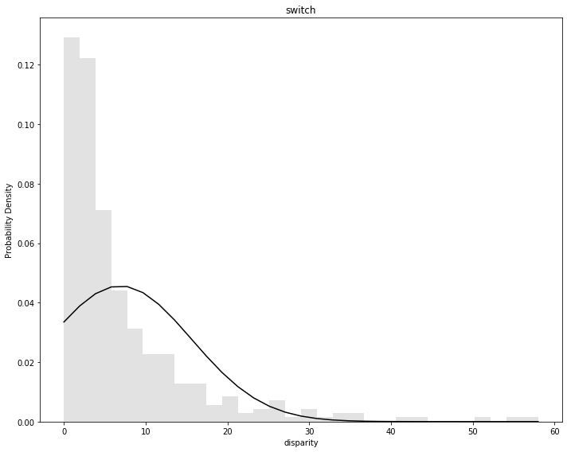
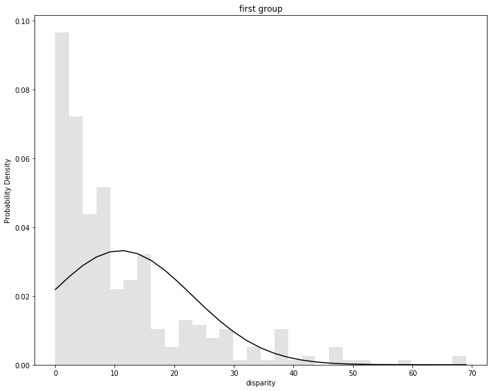
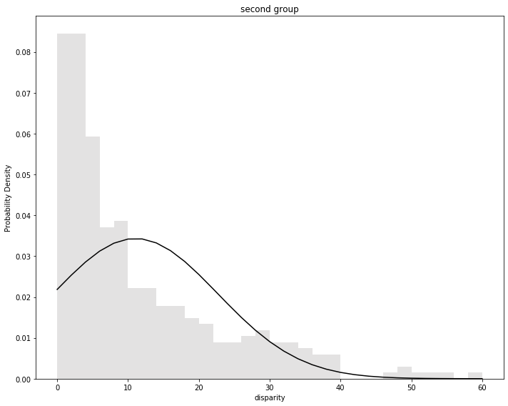

Analyzing Disparity Between Users and Journalists Ratings
Randomized Shuffling As My First Systematic Analysis

Intro
In this post we analyze and compare metacritic ratings of best 2019 games, Given by both the gaming community and professional journalism. It is divided into three sections, namely, data preprocessing, exploratory analysis, and systematic test. I launched a similar post upto exploratory analysis on this Reddit post. Surprisingly, The community shared with me great insights and feedbacks. If you have already seen my notebook on reddit’s post, Then skip to systematic test. There is a summary of each section if you’re lazy to read the whole kernel. Check summaries out in table of contents below. On the other extreme, If you are willing to read every detail of the kernel, I provided for you the full sourcecode used in this blog post here.
In a nutshell, The goal of this blog post is:
- Analyzing top games got high ratings from professional critics but not from community of users.
- Analyzing top games got high ratings from community of users but not from progessional critics.
- Graph of percentage of games whose disparity between critics and users are low, moderate, or high.
- Do above steps on four platforms, namely, PS4, Xbox One, Switch, and PC. Then we compare them.
- Apply permutation and p-values systematic test on each platforms pairs distributions.
What I Have Learned From Reddit Community
In this paragraph I shall highlight and review reddit’s community comments which I found most useful. I am going to just quote the user’s name, and summarize his comment. To see his full comment, just CTRL+F his name on reddit’s page. After each summary, I spot what I learned, and how analysis could be furtherly improved according to it. However, None of these spots are implemented here.
ArtKorvalay A gamer who dislikes a game but finds no outrage from the community does not add up his voice. A gamer who moderates a game but finds an outrage from the community adds up a negative voice
We could consider ratings along whether the game is hyped or outraged from the community. In that way, we might reach more accurate analysis.
ArtKorvalay Some games like disco elsiym gets played by only those who like such genre of games. A humble 2d-graphics like this shall not be played by any casual gamer who gets attracted by marketing and high graphics. So, a gamer who chooses to play it must be a fan of that style. As a result, the game got rated only by those who like it. Hence, ratings are biased.
We could consider ratings along whether a game’s marketing budget is high or low. In that way, we might reach more accurate analysis.
EoceneMiacid Terminator Resistance case study is typical for disparity between users and critics. Have a look here how the problem was highlighted by media.
Exploring this case study might reveal new insights as it is typical of the problem of disparity between users and professional critics. We might test our new techniques on this case study and see how our techniques perform up against it. Testing analysis techniques on a case we already know about emphatically shall help us on detecting mistakes in our analysis.
Table of Contents
Preface
Data Preprocessing
Exploratory Analysis
- Compute Disparity (Difference) Between Users and Critics
- Discretize Disparity Computed Earlier Into Categories
- Sort According to Disparity Between Users and Critics
- Basic Stats on Disparity Between Users and Critics
- Graphing Disparity Between Users and Critics
- Maximum Disparity Between Users and Critics Ratings
- Minimum Disparity Between Users and Critics
- Games Which Got Higher Ratings From Users Than From Critics
- Exploratoy Analysis Summary
Systematic Test
- A Single Permutation Shuffle Based Trial With Histogram & Probability Density Function
- Permutation Test and P-Value Based Statistical Significance
- Systematic Test Summary
Import Libraries and Local Files
# 3rd-party libraries
import numpy as np
import pandas as pd
import matplotlib.pyplot as plt
# local-files
import jsonRW as jsRW
import graphs.pie as pieGraph
import graphs.categoricalHeatmap as categoricalHeatmapGraph
import graphs.groupedBars as groupedBarsGraph
import graphs.histogramPdf as histogramPdfGraph
import transformations.transformations as transform
import transformations.discretizeIntoCategories as discIntCat
import statTests.permutationTest as permTest
Read Data
Read Local JSON Data Into a Pandas Dataframe
# a map from each platform to its corresponding dataframe
platform_df = {}
# platform names and their corresonding data file names
platformsNames = ['ps4', 'xbox', 'switch', 'pc']
filesNames = ['ps4.csv', 'xbox.csv', 'switch.csv', 'pc.csv']
# for each platform, then
for name in platformsNames:
# read its local json file
metacritic_list = jsRW.readJson(name)
# parse it as pandas dataframe, then map platform name to it
platform_df[name] = pd.DataFrame(metacritic_list)
# take a look at a dataframe
platform_df['ps4']
.dataframe tbody tr th {
vertical-align: top;
}
.dataframe thead th {
text-align: right;
}
Data Cleansing
# drop unneeded columns and re-organize them
for name in platformsNames:
platform_df[name] = platform_df[name][['title', 'user_rating', 'critic_rating']]
# take a look at a dataframe, again
platform_df['ps4']
.dataframe tbody tr th {
vertical-align: top;
}
.dataframe thead th {
text-align: right;
}
remarks
- user_rating must be on the same scale as critic_rating
- data types need to be checked
# check columns data types
platform_df['ps4'].dtypes
title object
user_rating object
critic_rating object
dtype: object
# convert ratings into a numeric value
# error ahead!
#df['user_rating'] = pd.to_numeric(df['user_rating'])
#df['critic_rating'] = pd.to_numeric(df['critic_rating'])
# get rid of user_rating with value equal to "tbd"
# for each platform
for name in platformsNames:
# get its dataframe
df = platform_df[name]
# get index set in which user_rating is tbd, a non-numeric value
tbdIndex = df[df['user_rating']=="tbd"].index
# drop rows specified by indices in which user_rating is tbd
df = df.drop(labels=tbdIndex, axis='index')
# set updated data to platform_df
platform_df[name] = df
# convert ratings to a numeric type
# for each platform
for name in platformsNames:
# get its dataframe
df = platform_df[name]
# convert to a numeric type
df['user_rating'] = pd.to_numeric(df['user_rating'])
df['critic_rating'] = pd.to_numeric(df['critic_rating'])
# set updated data to platform_df
platform_df[name] = df
# check data types
platform_df['ps4'].dtypes
title object
user_rating float64
critic_rating int64
dtype: object
# user ratings must be on the same scale as critics ratings, so we multiply them by 10
# for each platform
for platformName in platform_df:
platform_df[platformName]['user_rating'] = platform_df[platformName]['user_rating'] * 10
platform_df['ps4']
.dataframe tbody tr th {
vertical-align: top;
}
.dataframe thead th {
text-align: right;
}
Optional: Store Cleaned Data Into a CSV File
"""
# store data to a csv file
# for each platform
for platformName in platform_df:
# save to a csv file
platform_df[platformName].to_csv(str(platformName)+'.csv')
"""
"\n# store data to a csv file\n\n# for each platform\nfor platformName in platform_df:\n # save to a csv file\n platform_df[platformName].to_csv(str(platformName)+'.csv')\n"
Data Preprocessing Summary
- Data stored as JSON format are transformed into csv
- Unneded columns are dropped
- Suitable data types are recognized by pandas
Compute Disparity (Difference) Between Users and Critics
# for each platform
for name in platform_df:
# get dataframe of the platform
df = platform_df[name]
# for each record, compute distance between user and critic ratings, then set result to a new column
df['userCritic_difference'] = df.apply(lambda x: abs(x['user_rating']-x['critic_rating']), axis=1)
# assign updates back to our dataframe
platform_df[name] = df
platform_df['ps4']
.dataframe tbody tr th {
vertical-align: top;
}
.dataframe thead th {
text-align: right;
}
Discretize Disparity Computed Earlier Into Categories
# categories names and their corresponding intervals
# category at location x corresponds to interval equal or greater than intervals location x and less than location x + 1
# except for last category, has no end
categories = pd.Series(["low", "moderate", "high", "very_high", "extremely_high"])
intervals_categories = [0, 20, 30, 40, 50]
# compute categories as defined earlier
# loop on platforms
for platformName in platform_df:
# get dataframe of the platform
df = platform_df[platformName]
# add category based on difference just defined
df['difference_category'] = df.apply(discIntCat.numToCat, axis=1, args=('userCritic_difference', categories, intervals_categories))
# let categories be recognized by pandas
df['difference_category'] = df['difference_category'].astype("category")
# re-order categories
df['difference_category'] = df['difference_category'].cat.set_categories(categories, ordered=True)
# assign back to our dataframe
platform_df[platformName] = df
# take a look after our new columns added
platform_df['ps4']
.dataframe tbody tr th {
vertical-align: top;
}
.dataframe thead th {
text-align: right;
}
Sort According to Disparity Between Users and Critics
# for each platform
for platformName in platform_df:
# get platform dataframe
df = platform_df[platformName]
# sort it by userCritic_difference
df = df.sort_values(axis=0, by='userCritic_difference', ascending=False)
# assign sorted dataframe back to our dataframe
platform_df[platformName] = df
Basic Stats on Disparity Between Users and Critics
# for each platform
for platformName in platform_df:
# print platform name
print("\n", "on ", platformName)
# show basic stat
print(platform_df[platformName]['userCritic_difference'].describe())
on ps4
count 310.000000
mean 15.893548
std 13.074530
min 0.000000
25% 5.000000
50% 12.000000
75% 23.000000
max 69.000000
Name: userCritic_difference, dtype: float64
on xbox
count 186.000000
mean 14.801075
std 13.192881
min 0.000000
25% 5.000000
50% 11.000000
75% 21.000000
max 69.000000
Name: userCritic_difference, dtype: float64
on switch
count 364.000000
mean 6.876374
std 8.741062
min 0.000000
25% 1.750000
50% 4.000000
75% 9.000000
max 58.000000
Name: userCritic_difference, dtype: float64
on pc
count 327.000000
mean 13.547401
std 12.322982
min 0.000000
25% 4.000000
50% 10.000000
75% 19.000000
max 63.000000
Name: userCritic_difference, dtype: float64
Categories Size
Platform x Category 2D Sizes Dataframe
platform_category_size = transform.map_columnCount(platform_df, 'difference_category')
platform_category_size
.dataframe tbody tr th {
vertical-align: top;
}
.dataframe thead th {
text-align: right;
}
Category x Platform 2D Sizes Dataframe
category_platform_size = platform_category_size.transpose()
category_platform_size
.dataframe tbody tr th {
vertical-align: top;
}
.dataframe thead th {
text-align: right;
}
category_platform_size.loc['low', 'ps4']
211
Graphing Disparity Between Users and Critics
Pie Graph
for columnName in category_platform_size:
platSeries = category_platform_size[columnName]
platName = platSeries.name
pieGraph.showPieGraph(platSeries, platName + ' categories percentages', 6, 6)




Grouped Bar
groupedBarsGraph.showGroupedBars(platform_category_size, platformsNames, 'categories size', 'categories size by platform')

Categorical Heatmap
categoricalHeatmapGraph.showCategoricalHeatmap(8, 8, category_platform_size, "categories sizes among platforms")

Maximum Disparity Between Users and Critics Ratings
platform_df['ps4'].head(20)
.dataframe tbody tr th {
vertical-align: top;
}
.dataframe thead th {
text-align: right;
}
platform_df['xbox'].head(20)
.dataframe tbody tr th {
vertical-align: top;
}
.dataframe thead th {
text-align: right;
}
platform_df['pc'].head(20)
.dataframe tbody tr th {
vertical-align: top;
}
.dataframe thead th {
text-align: right;
}
platform_df['switch'].head(20)
.dataframe tbody tr th {
vertical-align: top;
}
.dataframe thead th {
text-align: right;
}
def searchforTitleInPlatform(platformStr_in, game_in):
tem_df = platform_df[platformStr_in][platform_df[platformStr_in]['title'] == game_in]
if len(tem_df) == 1:
return tem_df.iloc[0]
elif len(tem_df) == 0:
return -1
else:
raise ValueError("unexpected no of games found")
searchforTitleInPlatform('xbox', "hitman hd enhanced collection")
title hitman hd enhanced collection
user_rating 46
critic_rating 66
userCritic_difference 20
difference_category moderate
Name: 187, dtype: object
Minimum Disparity Between Users and Critics
platform_df['ps4'].tail(20)
.dataframe tbody tr th {
vertical-align: top;
}
.dataframe thead th {
text-align: right;
}
Games Which Got Higher Ratings From Users Than From Critics
def higherUserRatings(platform_in):
return platform_df[platform_in][platform_df[platform_in]['user_rating'] > platform_df[platform_in]['critic_rating']].head(10)
higherUserRatings('pc')
.dataframe tbody tr th {
vertical-align: top;
}
.dataframe thead th {
text-align: right;
}
Exploratoy Analysis Summary
- NBA, Fifa, Madden, COD: modern warefare games are on top of nearly all platforms lists of maximum disparity between users and professional critics
- Star Wars Jedi: Fallen Order got zero disparity between users and professional critics ratings
- Left Alive is the most praised game by the community not appreciated by professional critics
- Switch games got much lower percentage of high and moderate disparity
- Switch games got a mean of 7 disparity, nearly half of other platforms’ disparity which got about 14
A Single Permutation Shuffle Based Trial With Histogram & Probability Density Function
We compare platforms distributions through permutation-test. It is a more systematic approach than relying upon intuition of visualizing and comparing distributions. Given two platforms, We concatenate them into one group. That group’s elements are randomly shuffled. Then we divide the group into new two groups. We compare the two distributions of the new two groups and assess whether the insight is still present as in the case of the two original groups of platforms. If the insight is not present in the two new groups, then that would count an evidence on behalf of our hypothesis. That is, The insight (difference in distribution) of original distributions is attributed to the two platforms. In addition, We consider average a p-value of a distribution and utilize it in our test. In Next section, We apply this method iteratively.
Ensure Series Data are Ascendingly Ordered
print(platform_df['ps4']['userCritic_difference'])
print("")
print(platform_df['switch']['userCritic_difference'])
93 69.0
82 68.0
116 60.0
79 52.0
172 51.0
...
198 0.0
330 0.0
214 0.0
76 0.0
56 0.0
Name: userCritic_difference, Length: 310, dtype: float64
240 58.0
66 55.0
94 51.0
416 43.0
123 42.0
...
443 0.0
89 0.0
106 0.0
53 0.0
208 0.0
Name: userCritic_difference, Length: 364, dtype: float64
PS4 Distribution
histogramPdfGraph.showHistPdf(platform_df['ps4']['userCritic_difference'], 30, '#e3e2e2', 'black', 'disparity', 'ps4', 10, 8)

Average of PS4’s Disparity
platform_df['ps4']['userCritic_difference'].mean()
15.893548387096773
Switch Distribution
histogramPdfGraph.showHistPdf(platform_df['switch']['userCritic_difference'], 30, '#e3e2e2', 'black', 'disparity', 'switch', 10, 8)

Average of Switch Disparity
platform_df['switch']['userCritic_difference'].mean()
6.876373626373627
Conclusion
- The difference between ps4 and switch distributions is notable
- The difference between ps4 and switch means is about 9
Concatenate Both PS4 and Switch
bothGroups = pd.concat([platform_df['switch']['userCritic_difference'], platform_df['ps4']['userCritic_difference']])
Shuffle and Divide
# permutation based shuffling
rng = np.random.default_rng()
bothGroups = rng.permutation(bothGroups)
# divide into two groups
firstGroup = bothGroups[:int(len(bothGroups)/2)]
secondGroup = bothGroups[int(len(bothGroups)/2):]
First Group Distribution
histogramPdfGraph.showHistPdf(firstGroup, 30, '#e3e2e2', 'black', 'disparity', 'first group', 10, 8)

First Group Average
firstGroup.mean()
11.0
Second Group Distribution
histogramPdfGraph.showHistPdf(secondGroup, 30, '#e3e2e2', 'black', 'disparity', 'second group', 10, 8)

Second Group Average
secondGroup.mean()
11.047477744807122
Conclusion
- The difference between first and second groups distributions is not notable alike ps4 and switch
- The difference between first and second groups means is much less than disparity between ps4 and switch distributions
Permutation Test and P-Value Based Statistical Significance
We apply the above method iteratively. The more tests, The more confident we are of our hypothesis. That is, The pattern of two distributions is attributed to the difference in two platforms.
# computes average of a list
def avgOfList(list_in):
return pd.Series(list_in).mean()
# loop on pairs of platforms
for idx, platformName in enumerate(platformsNames):
for idx_, platformName_ in enumerate(platformsNames):
# compare only unique pairs
if idx_ > idx:
# print pairs of platforms which are compared
print(platformName, platformName_)
# apply test for 25 iterations on first and second platforms of the nested loop
testResults = permTest.permutationTest(25, platform_df[platformName]['userCritic_difference'], platform_df[platformName_]['userCritic_difference'])
# print results average
print(avgOfList(testResults))
print("")
ps4 xbox
0.6639999999999998
ps4 switch
8.21812431561929
ps4 pc
1.5160265239233675
xbox switch
7.010956187898123
xbox pc
0.5826510174543579
switch pc
6.286296818538614
Conclusion
- switch has greatest statistical significance in comparison with other platforms
Systematic Test Summary
- For ps4 and switch, The difference between distributions and means is notable
- For the two randomly generated, through shuffling, groups, The difference between distributions and means is not notable alike original ps4 and switch
- The disappearance of noted pattern in the two randomly generated groups counts as an evidence of our hypothesis. That is, the pattern (difference) of switch and ps4 distributions is attributed to platforms factor.
- Switch has greatest statistical significance in comparison with other platforms